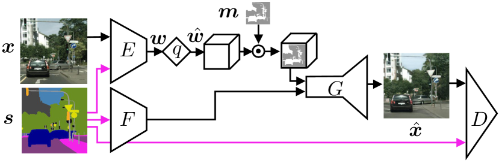
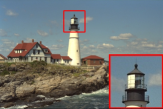
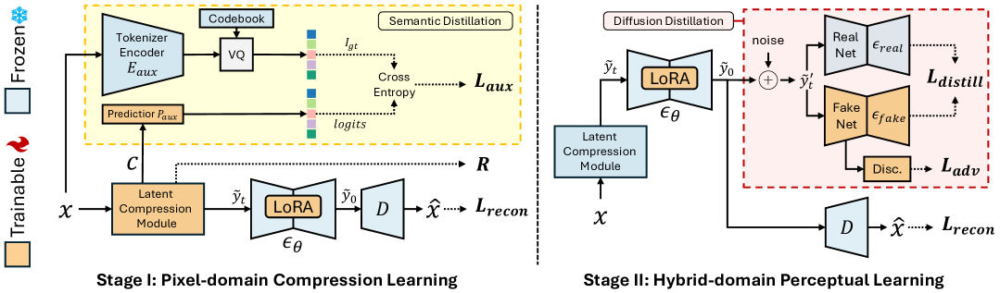
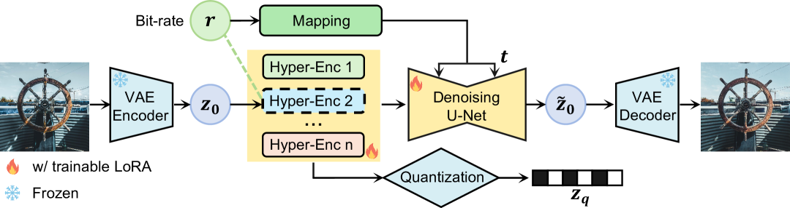
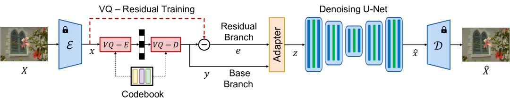

Blau & Michaeli（ICML 2019）证明了一个基本结论：在给定比特率 R 下，Rate-Distortion-Perception 三者不可同时最优。
降低 Distortion（如 MSE）意味着像素级准确，但会产生模糊的重建图像。降低 Perception（如 LPIPS）意味着视觉真实，但像素可能偏离原图。传统编码器（JPEG, BPG, VVC）走的是"忠实重建"路线，而生成式压缩选择了"看起来真实"。

首次在极端低码率图像压缩中使用 GAN。Generator 作为 decoder，Discriminator 约束感知质量。证明了 GAN 可以在极低码率下生成视觉真实的图像。
里程碑：HiFiC (Mentzer et al., NeurIPS 2020) ★★★

HiFiC 系统研究了 GAN 训练策略、归一化层、生成器/判别器架构。最关键的贡献是引入了用户研究（user study）：即使比特率只有 BPG 的一半，人类评估者仍然更偏好 HiFiC 的结果。
同时引入感知损失（LPIPS）替代纯 MSE 作为优化目标。引用 738+，成为 GAN 压缩的事实标准。
Apple PICO (2024)：走向实用
首个兼具感知质量、实用速度、跨平台兼容性的感知优化编解码器。ConvScale 重参数化、Haar 小波重采样、百万级 NAS 搜索。证明 GAN 压缩可以走向实际部署。
训练不稳定（GAN 固有问题）、生成多样性有限（mode collapse）、在极低码率（<0.03 bpp）下质量仍然不够好。这些局限催生了扩散模型的引入。
扩散模型的迭代去噪过程天然适合"从极少信息中重建丰富细节"。Yang & Mandt（NeurIPS 2023）首次将条件扩散模型用作压缩的 decoder，用内容潜变量条件化反向扩散。
超低码率下的"完美真实感"。对矢量量化图像表示和全局描述进行条件化，在极低比特率下产出出色的重建质量。但解码时间约 3.7 秒（Kodak, RTX 3090），远离实时。

潜在特征引导 + 扩散先验。50步扩散解码，约 7.4 秒（Kodak, RTX 3090）。质量极高但速度是硬伤。
多步扩散的速度困境
多步去噪需要数十到数百次网络前向传播。PerCo ~3.7s（20步），DiffEIC ~7.4s（50步）。与传统编解码器（BPG ~0.01s）差两个数量级。速度问题成为扩散压缩走向实用的最大障碍。
核心突破：将扩散去噪从 N 步压缩到 1 步。不是在数学上证明单步扩散等价于多步，而是通过蒸馏让模型学会"一步到位"。
OneDC (NeurIPS 2025)


Latent 压缩模块 + 单步扩散生成器整合。语义蒸馏将预训练生成 tokenizer 的知识迁移到超先验。LoRA 适配 Stable Diffusion，不修改基础模型权重。比特率降低 40%+，解码速度提升 20 倍（0.34s, MS-COCO, A100）。
StableCodec (ICCV 2025)

双分支架构是 StableCodec 的核心设计。辅助解码器 D_aux 从比特流直接解码结构信息，扩散生成器 g_θ 专注生成真实细节。没有辅助解码器时，g_θ 需要同时承担结构+细节，负担过重导致去噪指导不佳。
解码时间 0.326s（Kodak, RTX 3090, 1步）。

多码率统一框架——一个模型覆盖不同质量等级。这在实际应用中极为重要，传统方法需要为每个质量等级训练单独的模型。

单步扩散超低码率。保持感知质量的同时将解码速度提升约 50 倍。
CoD-Lite：实时 60 FPS ★★

首个实时扩散图像压缩编解码器。压缩导向预训练（CoD）是解锁小模型扩散先验的关键。研究发现压缩任务中注意力以局部模式为主（7/26层全局，19层局部），因此用局部窗口注意力替代全局注意力 + DMD 蒸馏实现 14 倍推理加速。
1080p 实时 60 FPS 编码、42 FPS 解码。
| 方法 | 路线 | 数据集 | 硬件 | 编码(s) | 解码(s) | 步数 |
|---|---|---|---|---|---|---|
| DLF | VQGAN | Kodak | A100 | 0.178 | 0.252 | — |
| StableCodec | 1-Step Diff | Kodak | RTX3090 | 0.159 | 0.326 | 1 |
| DiffO | 1-Step Diff | CLIC | Titan RTX | 0.136 | 0.253 | 1 |
| OneDC | 1-Step Diff | MSCOCO | A100 | 0.15 | 0.34 | 1 |
| CoD-Lite | 1-Step Diff | — | — | — | 60FPS | 1 |
| DiffEIC | 多步 Diff | Kodak | RTX3090 | 0.676 | 7.423 | 50 |
| PerCo | 多步 Diff | Kodak | RTX3090 | 0.287 | 3.742 | 20 |
| Text+Sketch | 多步 Diff | Kodak | RTX3090 | 113.252 | 33.560 | 25 |
「单步扩散的关键突破不是理论上的，而是工程上的。」
「双分支架构的必然性。」
「从压缩到生成的边界正在模糊化。」
参考来源
- Blau & Michaeli (2019), Rethinking Lossy Compression: The Rate-Distortion-Perception Tradeoff, arXiv:1901.07821
- Agustsson et al. (2019), Extreme Image Compression with Generative Adversarial Networks, arXiv:1804.02958
- Mentzer et al. (2020), High-Fidelity Generative Image Compression, arXiv:2006.09965
- Careil et al. (2023), Towards Image Compression with Perfect Realism at Ultra-Low Bitrates, arXiv:2305.18231
- Xue et al. (2025), One-Step Diffusion-Based Image Compression with Semantic Distillation, arXiv:2505.16687
- Zhang et al. (2025), StableCodec: Taming One-Step Diffusion for Extreme Image Compression, arXiv:2506.21977
- OSCAR (2025), One-Step Diffusion Codec Across Multiple Bit-rates, arXiv:2505.16091
- DiffO (2025), Single-Step Diffusion for Image Compression at Ultra-Low Bitrates, arXiv:2506.16572
- CoD-Lite (2026), Real-Time Diffusion-Based Generative Image Compression, arXiv:2604.12525